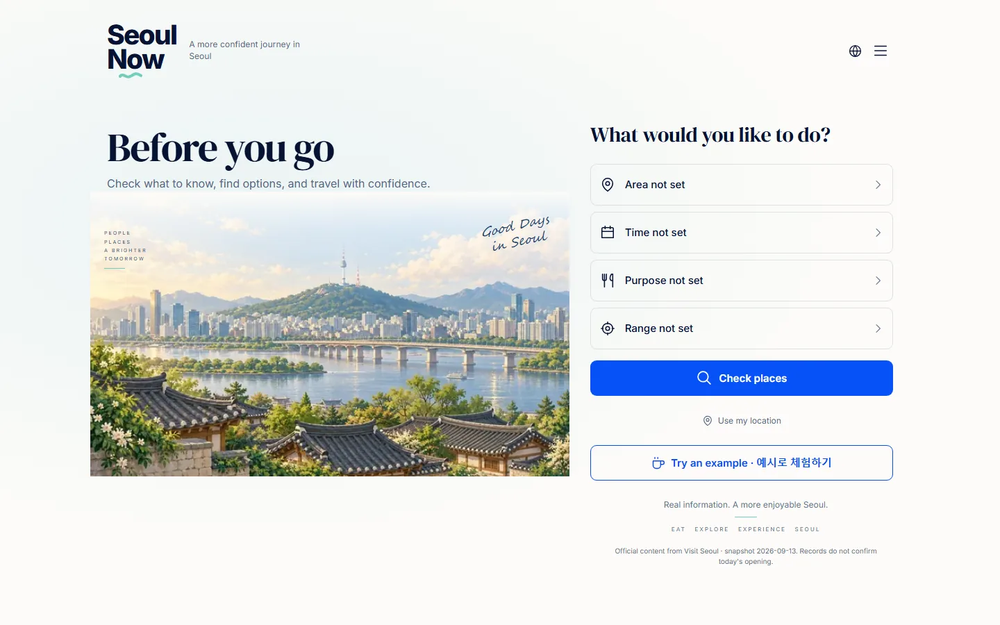
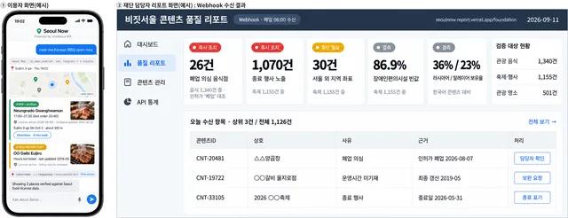
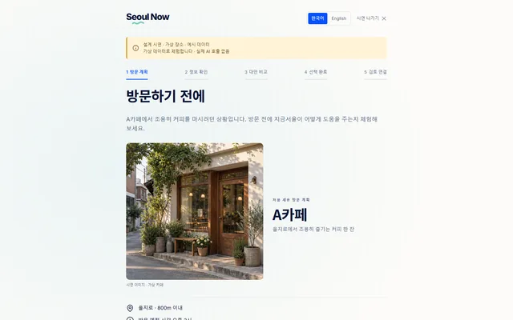
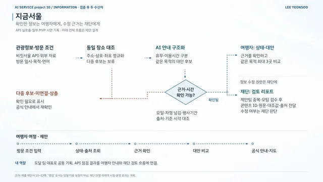
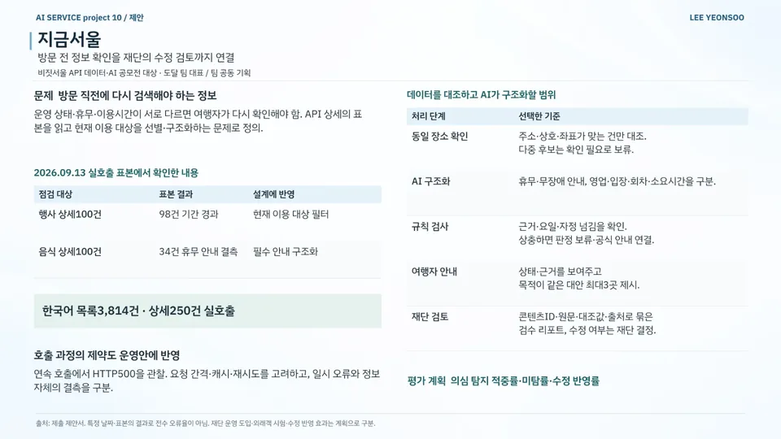
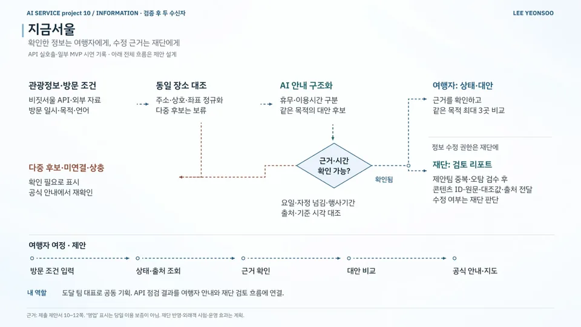

AI 서비스 기획 / 공공·정책 / 관광
지금서울
Seoul Now — Verified Visit Info and Correction Review
방문 전 관광 정보 안내와 재단의 정보 수정 검토 절차 설계
현재 상태API 표본 점검·제출용 웹 시연 · 전체 서비스는 설계 단계
- 기간
- 2026.09 (API 실호출 2026.09.13 · 결과 발표 2026.09.21)
- 팀
- 팀 도달 (5인)
- 내 역할
- 팀 대표 · 기획 보완·화면 설계·시연 페이지 제작
- 도구
- 수상
- 대상 대상 · 서울관광재단 대표이사상
2026 비짓서울 API 데이터·AI 활용 아이디어 공모전
내 기여팀 대표로 원안을 보완하고 Figma 사용자 흐름·와이어프레임·기능명세서를 작성했습니다. Claude로 MVP 시연 페이지(Seoul Now)를 만들고 API 점검 결과를 여행자 안내와 재단의 정보 수정 검토 절차에 반영했습니다.
사진·화면


크게 보기
크게 보기이용자 화면과 재단 담당자 품질 리포트 예시출처팀 자료 
크게 보기예시 체험: 방문 전 계획을 단계별로 확인출처visitseoul-contest.vercel.app/demo (새 창) 
크게 보기서비스 구조: 관광정보 대조 → AI 안내 구조화 → 여행자 안내·재단 검토 리포트출처팀 자료


발표 자료

크게 보기포트폴리오 슬라이드 28쪽 · 본문 내용을 한 장으로 정리한 슬라이드 
크게 보기포트폴리오 슬라이드 29쪽 · 본문 내용을 한 장으로 정리한 슬라이드


문제
운영 상태·휴무·이용시간이 출처마다 달라 여행자가 방문 직전에 다시 검색해야 합니다. API 상세 정보를 구조화해 현재 이용할 대상을 안내하는 서비스를 제안했습니다.
접근
- 2026.09.13 비짓서울 API 실호출 점검: 한국어 목록 3,814건 · 상세 250건
- 동일 장소 대조: 주소·상호·좌표가 맞는 건만 대조하고 다중 후보는 '확인 필요'로 보류
- AI로 휴무·무장애·이용시간을 구조화하고 근거·요일·자정 넘김을 규칙으로 재검사
- 여행자용 상태·근거·시각·대안 최대 3곳 안내와 재단용 원문·대조값·출처 리포트 설계
핵심 판단
규칙 검사에서 근거가 상충하면 판정을 보류하고 공식 안내로 연결
정보 수정 여부는 재단이 결정하고 제안 서비스는 중복·오탐 검수 후 리포트 전달까지만 담당
연속 호출에서 관찰한 HTTP 500을 정보 결측과 구분하고 요청 간격·캐시·재시도를 운영안에 반영
결과
- 행사 상세 기간 경과98/100건2026.09.13 API 실호출 표본
- 음식 상세 휴무 안내 결측34/100건같은 날 표본
- 실호출 점검 범위목록 3,814 · 상세 250한국어 데이터
- 행사 상세 표본 100건 중 98건이 기간 경과 → 현재 이용 대상 필터 제안 (2026.09.13)
- 음식 상세 표본 100건 중 34건에 휴무 안내가 빠져 있어 필수 안내 구조화 설계
- 평가 지표 설계: 의심 탐지 적중률 · 미탐률 · 수정 반영률
- 대상 · 서울관광재단 대표이사상
AI 활용
AI는 휴무·무장애 안내와 영업·입장·회차·소요시간을 나누는 구조화에만 쓰고, 요일·자정 넘김·행사 기간은 규칙으로 다시 검사하도록 설계했습니다.
한계와 다음 단계
특정 날짜의 표본 결과로 전수 오류율이나 AI 정확도가 아니며, '영업' 표시가 당일 이용을 보장하지도 않습니다. 전체 흐름은 제안 설계(공개 MVP는 공모전 제출용 시연 페이지)이고, 재단 도입·외래객 테스트·수정 반영 효과 측정은 다음 단계입니다.